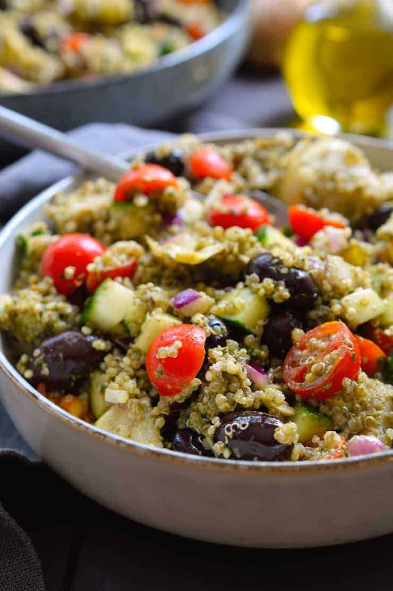

Prep Time: 10 minutes
Cook Time: 20 minutes
Total Time: 30 minutes
Servings: 4
Step 1: Bring the water to a boil and add the quinoa.
Step 2: Cover and reduce the heat to low. Cook for 20–30 minutes until the quinoa is tender and the water has been absorbed.
Step 3: Fluff the quinoa with a fork and transfer it to a large bowl.
Step 4: In a food processor combine basil, walnuts, garlic, nutritional yeast, and olive oil. Blend until smooth to create the pesto.
Step 5: Mix the pesto into the quinoa.
Step 6: Add the red onion, cucumber, cherry tomatoes, olives, and artichoke hearts.
Step 7: Toss everything together and season with salt and pepper.
Step 8: Serve warm or chilled.